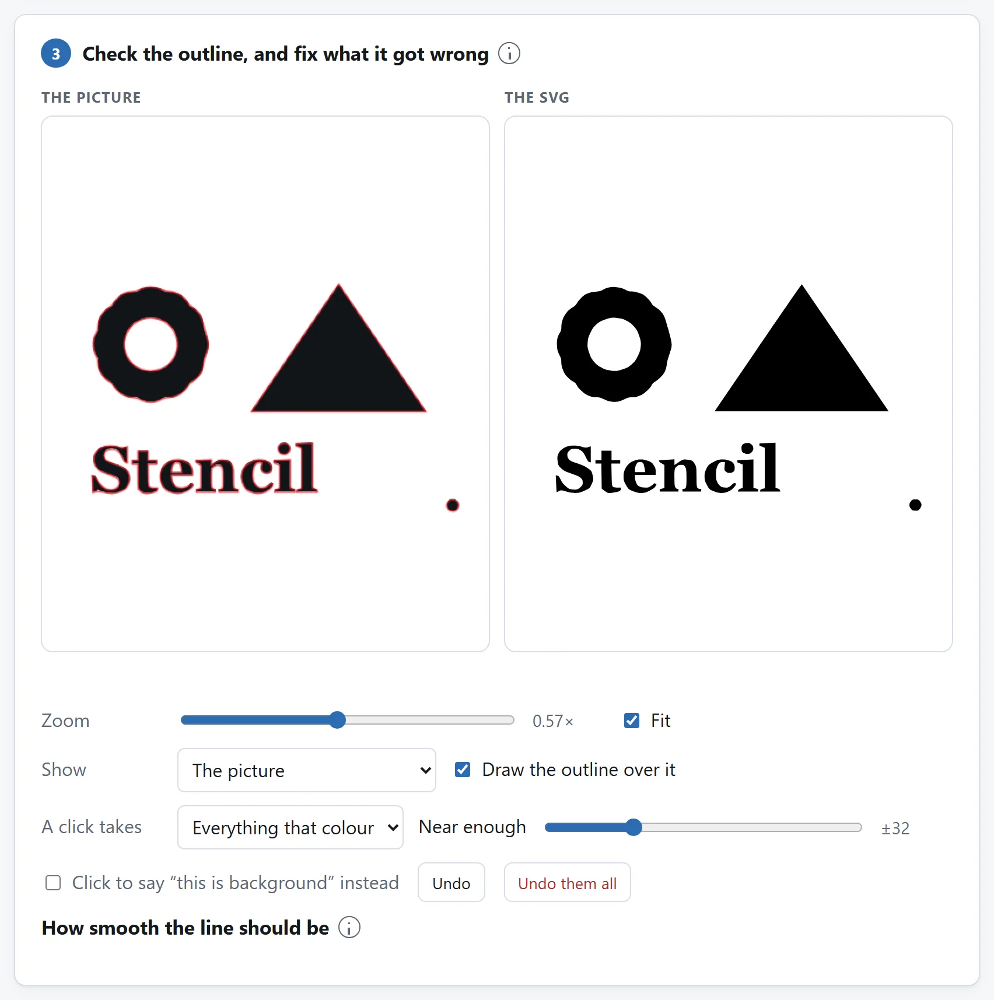
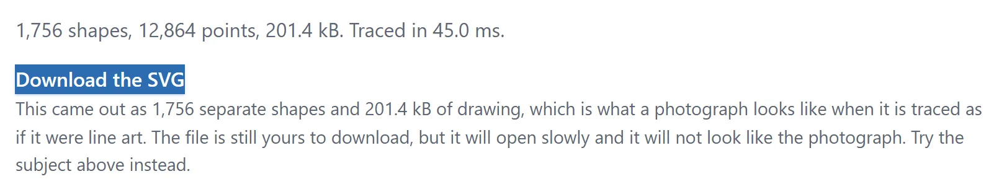
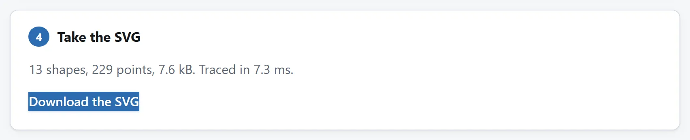

简短的回答
打开图片转 SVG，把图片丢进去，看红线。那条线就是现在的轮廓，画在它来自的那些像素上面。如果它贴着形状走，拿文件就行。如果里面有不该有的东西——一个斑点、一枚订书钉、一行说明、一片阴影——点一下那个东西，它就没了。
下面讲的全是决定这件事到底成不成的两个问题：你的图片是形状还是照片，以及找形状的两种方法它需要哪一种。

找回标志、做模板或描实色轮廓
只剩扫描件的标志或手写字。先裁纸边，用明暗模式调阈值，保细笔画，不把纸影变墨。局部修正去杂点，查 O、A 等字母孔洞。结果是几何形状，不是可编辑文字，单色描摹不能还原字体或分开的颜色。
刻膜或复用模板。清楚图稿只简化到最小切口允许的程度。切割软件里打开 SVG、设物理尺寸，查小孔和脱离碎片。需要时在编辑器加模板连接桥；工具不设计桥，也不补偿刀具宽度。
照片轮廓。选主体模式，查外形是否跟物体，物体触边时手动采背景。烟、玻璃、头发和杂背景可能没有能恢复的干净边界。
描图不是转换，照片描不了
把 JPEG 转成 PNG 是转换：同一张图，换一种写法，路上什么都没有决定。描图不是这样。它把几乎所有东西都扔掉，只留一样——一个形状的边界——然后把这条边界写成曲线。如果你的图片里有一个清楚的形状，这正是你要的。如果是一张房间的照片，就没有形状可留，回来的是每一块颜色相近的区域各自变成一个色块。
这不是一个等着被工程攻克的限制，所以值得把数字说清楚。一页 A4 线稿描出来是三个形状、六千字节。一页手写字是五十个形状、十五万字节。区区一百万像素的照片描出来是四千个形状、一兆半——比 JPEG 大，打开更慢，还不像那张照片。到了那一步，工具会停止绘制并明说，而不是等你下载完才发现。

哪些描得好：
- logo、标志和花押字；
- 镂空模板、印章和切割文件；
- 签名和手写字体；
- 线稿、排线和漫画的墨线；
- 剪影，以及任何本来就是白底黑图的东西。
有一件跟照片有关的活儿确实能做，但那是另一件事：把一样东西从背景里抠出来，抠成一整块实心剪影。第二个设置就是为这个准备的。
找形状的两种方法
描图需要每像素一位——在里面，还是在外面——决定这一点有两种办法。
明暗问的是每个像素是否比某个值更暗，这个值替你算好。这对纸上的墨迹再合适不过，logo、扫描件和镂空模板都该用它。它出错的时候，通常错得看得见：挪动阈值，直到细线保住，而纸不跟着变灰。
主体问的是另一个问题，因为在照片上，第一个问题没有答案。深灰石头上站着一尊深红塑像，是深色叠深色：没有哪个亮度能把它们分开，所以任何阈值都做不到。它转而从图片边缘的一圈带子里学会什么是背景，拿每个像素跟它比，留下不是背景的最大一块。角落里的一行说明不是最大的一块，所以会被丢掉，而不是被描出来。
它有一种失败方式值得事先知道：裁得太紧、主体从两三边出画的照片。这时边缘大多是主体，模型学到的是主体自己的颜色，答案就里外颠倒了。这种情况拨哪个滑块都没用——错的是前提，不是算术。关掉从边缘学背景，勾上改为点一下说“这是背景”，然后在背景上点两三下。
它弄错的地方，指一下就能改
阈值是整张图片共用的一个数，总会在某个地方出错：一片阴影成了墨迹，一枚订书钉留了下来，字母 O 的中间糊上了。每一处都是局部的错误，都有显而易见的局部解法，而解法不是再来一个滑块——是把那个东西指出来。
点任何不该出现在图里的东西，它就消失；再点一下，它就回来。一下点中的是那一整块同色区域，所以一下去掉的是整个斑点或整个印章，而不是一个像素。点一块被围住的背景则是把它填上，不该是洞的洞就是这么补上的。图片下面那一行会在你点之前告诉你它是哪一种、有多大，所以一下点掉大半张图的事，永远不会是个意外。
改动和阈值分开保存，所以之后再拖滑块也不会把它们丢掉；把图片反过来，改动也跟着反过来——你抹掉的斑点还是抹掉的，不会变成背景上的一个洞重新冒出来。
平滑的两个数，以及什么时候该碰
细节是简化时线条允许偏离像素多远。低于 1 左右什么都不会发生——楼梯的一级台阶离它所属的线整整一个像素，所以更小的容差会把每一级台阶都留下，没有东西可简化。高于 2 左右，就开始吃掉真正的曲线。除非你另有指定，否则它按形状算，因为一个数没法同时伺候一整个人像和字母里两像素宽的竖笔。
拐角锐度是轮廓要拐多大的弯，那个弯才保留为角而不是被磨成曲线。这只是决定的一半——一个顶点离邻居够远，也会被留作角，光这一条就能抓住所有明显的角——所以这个数只裁决那些缓的弯。低于二十度左右，一切都成了角，圆回来时成了多边形。
大多数图片这两项都不用碰。值得知道它们，是为了确实需要的两种情况：很小的文字的扫描件，需要更多细节；准备上机器切割的形状，通常需要更少。
你拿到什么，拿它做什么
一个文件，里面一条 <path>。外轮廓朝一个方向转，里面的洞朝另一个方向转，所以一个带四十个洞的形状也能是一个元素，不用设置填充规则——Illustrator、Inkscape、Figma、浏览器和大多数切割软件读出来都一样。

反过来的方向——你已经有 SVG，需要的是 PNG——是另一件事，有它自己的指南。描图没有任何一步是可逆的：从这里出去的 SVG 是这个形状的一张新图，不是它来自的那张图片。